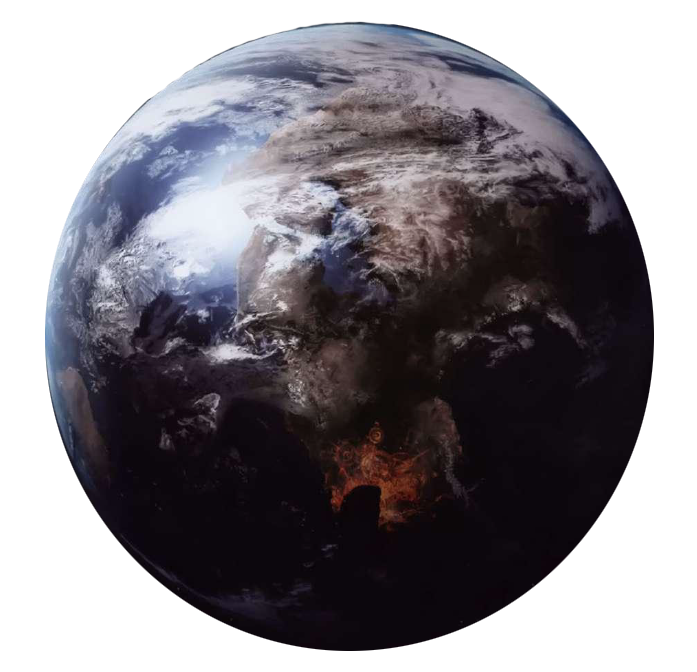

Corellia
corellia
Population: 3 Billion
Terrain: Forests, Hills, Plains
Orbital Metrics: 329 days per year/25 hours per day
Languages: Basic
Major Cities: Coronet (capital), Kor Vella, Tyrena
Areas of Interest: Treasure Ship Row, Corona House, The Cold Beaches, Selonian Tunnels
Major Exports: Alcohol, finished starships, starship components (hulls, weapon systems, sensors, drives, etc.), agricultural products (raw and processed foodstuffs, fibers and textiles, fuels)
Major Imports: Luxury goods, raw materials, personal weapons
Astronavigation Data
Trade Routes:
Corellia is the largest and most populous planet orbiting the star Corell. It is a pleasant, temperate world of rolling hills, soaring mountains, grassy plains, and broad, tempestuous seas. It is known throughout the galaxy for its lovely beaches, handsome people, and prowess at ship building and handling. Considered the "capital" of the Corellian System, Corellia (and its people, the intrepid Corellians) projects a vast amount of influence over the rest of the system, and provides most of the impetus behind the system's economy.
Corellia is currently governed by a corporate authority; throughout its history, Corellia has been ruled by a galaxy-spanning empire, a hereditary monarchy, a constitutional monarchy, and even a constitutional republic. It has given birth to some of the most powerful industrial concerns the galaxy has ever known (such, as the Corellian Engineering Corporation) and some of the most infamous pirates, confidence men, and smugglers to ever sail a starship.
Corellia serves as the seat of government for the entire Corellian Sector, and many other planets in the region owe their colonization to the Corellians of yesteryear. Under Imperial influence, Corellia controls the sector, but it does so under the rule of the Imperial Grand Moff—first Fliry Vorru, then Naomi Dargon. CorSec, Corellia's Security Force, now operates with Imperial "liaisons" and fleets of Star Destroyers are a common sight in orbit.
Plotted over 25,000 years ago by Corellian hyperspace explorers, the Corellian Run is the longest and most profitable hyperspace trade route in the galaxy. Its construction and development helped to make Corellia into the economic and political powerhouse it is today. The Run stretches from Coruscant in the Core to Wrea in the far reaches of the Outer Rim, and it spans tens of thousands of light years. Along the way, the Run passes through the major sectors of the Core Region, the Colonies, the Expansion Region, and the Inner and Middle Rim territories before it terminates at the edge of the galaxy. Thousands upon thousands of worlds are served by the Corellian Run and many of the galaxy's most profitable and traveled hyperspace lanes, such as the Namadii Corridor, the Hydian Way, and the Corellian Trade Spine, are merely tributaries of the great and ancient road.
Earning Your Bloodstripes
The most prestigious of Corellia's national prizes are "bloodstripes," yellow or red piping stitched down the trouser legs. Corellia's government and military award them for heroic displays of bravery, done with the knowledge that such action requires great sacrifice. For a people who prefer to shoot first and ask questions later, moments of deliberation are valued highly.